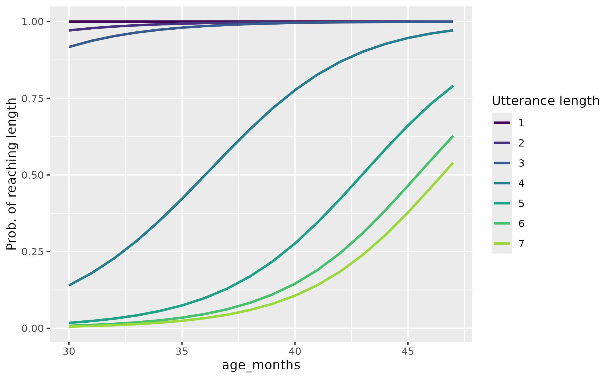
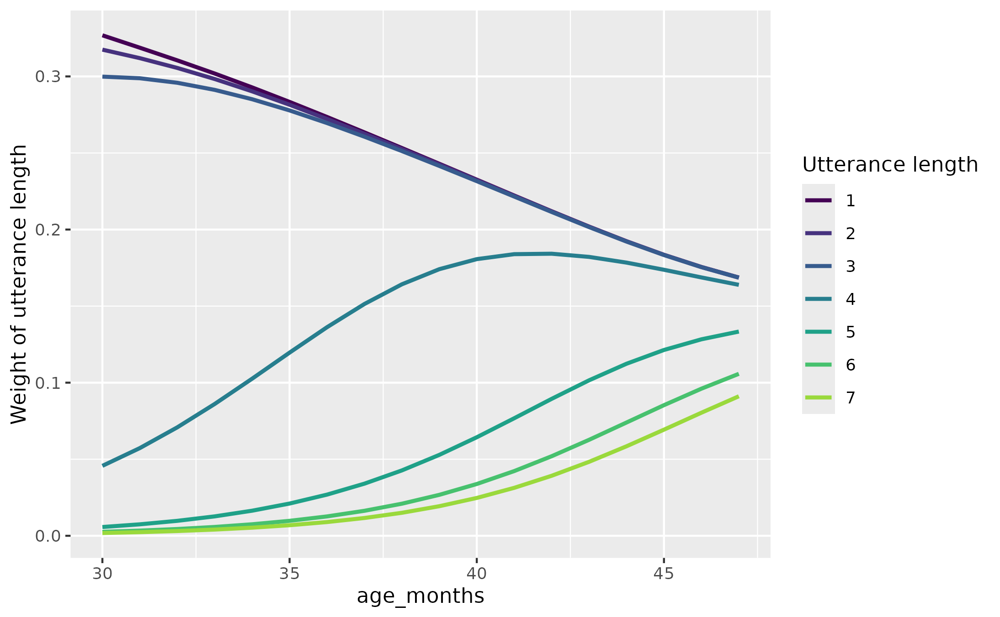

Weight utterance lengths by using an ordinal regression model
Source:R/impute-staged.R
weight_lengths_with_ordinal_model.RdFor each participant, we find their length of longest utterance. We predict this longest utterance length as a nonlinear function of some variable, and we compute the probability of reaching each utterance length at each value of the predictor variable. These probabilities are then normalized to provide weights for each utterance length.
Usage
weight_lengths_with_ordinal_model(
data_train,
var_length,
var_x,
id_cols,
spline_df = 2,
data_join = NULL
)Arguments
- data_train
dataframe used to train the ordinal model.
data_traincan also be a function. In this case, it is applied to thedata_joinargument in order to derive (filter) a subset of the data for training.- var_length
bare name of the length variable. For example,
tocs_level.- var_x
bare name of the predictor variable. For example,
age_months.- id_cols
a selection of variable names that uniquely identify each group of related observations. For example,
c(child_id, age_months).- spline_df
number of degrees of freedom to use for the ordinal regression model.
- data_join
(optional) dataset to use join the weights onto. This feature is necessary because we want to train a dataset on the observed data but supply the weights to the dataset with missing values imputed.
Value
the probability and weights of each utterance length at each observed
value of var_x. These are in the added columns
{var_length}_prob_reached and {var_length}_weight, respectively.
References
Hustad, K. C., Mahr, T., Natzke, P. E. M., & Rathouz, P. J. (2020). Development of Speech Intelligibility Between 30 and 47 Months in Typically Developing Children: A Cross-Sectional Study of Growth. Journal of Speech, Language, and Hearing Research, 63(6), 1675–1687. https://doi.org/10.1044/2020_JSLHR-20-00008
Hustad, K. C., Mahr, T., Natzke, P. E. M., & J. Rathouz, P. (2020). Supplemental Material S1 (Hustad et al., 2020). ASHA journals. https://doi.org/10.23641/asha.12330956.v1
Examples
data_weights <- weight_lengths_with_ordinal_model(
data_example_intelligibility_by_length,
tocs_level,
age_months,
child,
spline_df = 2
)
if (requireNamespace("ggplot2")) {
library(ggplot2)
p1 <- ggplot(data_weights) +
aes(x = age_months, y = tocs_level_prob_reached) +
geom_line(aes(color = ordered(tocs_level)), linewidth = 1) +
scale_color_ordinal(end = .85) +
labs(y = "Prob. of reaching length", color = "Utterance length")
print(p1)
p2 <- p1 +
aes(y = tocs_level_weight) +
labs(y = "Weight of utterance length")
print(p2)
}

